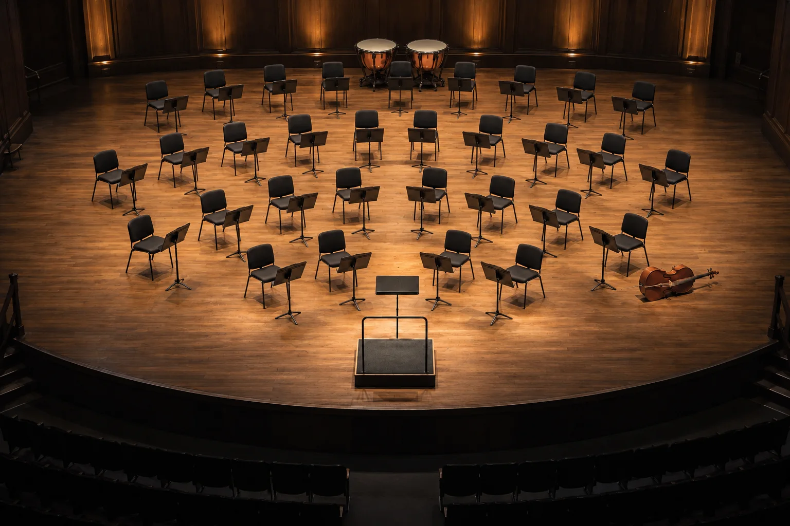
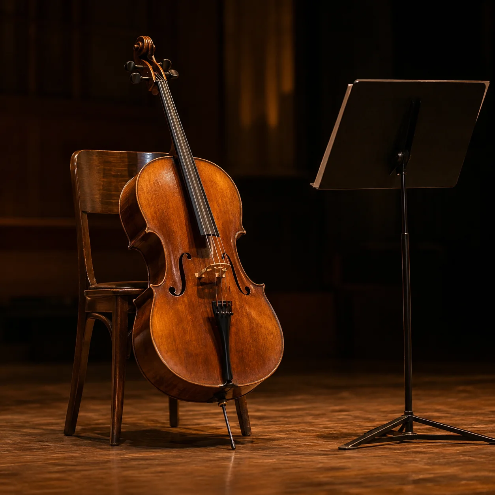

Point at a name to light its section. Click it to meet the player.
The season 2026-27
The stage
The same plan with nobody in it: Centro Cultural de Belém, an hour before the doors open, set for Haydn.

Players
By surname. Seats are the seats for Haydn; we move for every programme.
Join and support
Auditions
We are looking for a principal bassoon and a second violin.
Ruben Silva retires in June after twenty-two seasons. Preliminary rounds on 18 and 19 January 2027 in Marvila, behind a screen; the final on 6 February, with the orchestra and without one.
Send a recording of the first movement of a Mozart concerto by 30 November to auditions@sinfoniettadotejo.pt. We answer everyone.
Friends of the orchestra
Friends sit in on two rehearsals a season and hear the next one announced before anyone else.
60 euros a year, 25 if you are under thirty. Last season the Friends paid to restore the 1781 Lisbon cello that Nuno Reis plays.
friends@sinfoniettadotejo.pt
The rehearsal room

A former cork warehouse in Marvila, between the railway and the river.
Rua do Açúcar 74, Lisboa. We rehearse Tuesday to Thursday, 10:00 to 13:30. On the last Thursday of the month the door is open: come in, sit at the back, don’t clap.
Box office
+351 210 000 345, Tuesday to Saturday, 13:00 to 19:00.
At the hall from 20:00 on concert nights. Under-thirties pay 8 euros, always.